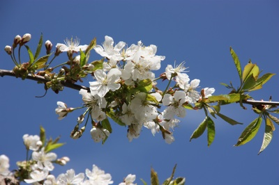
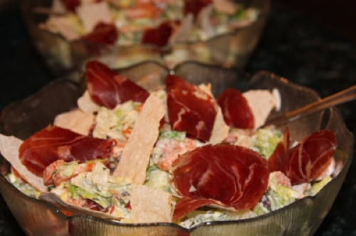

Retreater på Aarholt-tunet Gjestegård, Stokke i Vestfold
"Retreat - Keltisk inspirert med stillhet, Bibel-, sanse- og naturmeditasjoner, tidebønner og gudstjeneste."
Pris for tre døgn: Kr 3.500,-
På grunn av Covid-19 må planlagt tidspunkt i november skyves på. Nærmere informasjon om nytt tidspunkt kommer senere på høsten.
"Retreat - Keltisk inspirert."
Tidspunkt avklares senere på høsten.
Pris kr 3.500,- inklusiv fullpensjon.
Programmet starter kl. 18.00 på torsdag og slutter kl. 12.00 på søndag. Det er mulig å være lengere for dem som ønsker det.
Retreat over 3 døgn, opp mot adventtiden. Stillhet, Bibel- og naturmeditasjoner, tidebønner og gudstjenester inspirert av den keltiske tradisjonen.
Tidebønner:
Dagen rammes inn av tidebønner. Både Bibelen og keltisk spiritualitet er med på å prege tidebønnene, og tekstene markerer at vi er nær adventstiden. Vi feirer nattverd torsdag kveld og søndag formiddag.
Bibel-, sanse- og naturmeditasjoner:
Meditasjonene på denne retreaten er også inspirert av den keltiske tradisjonen. De er et møtepunkt mellom Bibelen og skaperverket. Vi bruker sansene våre til å oppfatte omgivelsene, og vi lar ord fra Bibelen ledsage oss slik at sanseopplevelsene kan bli en meditativ øvelse. Noen av meditasjonene vil foregå utendørs. Ta med varme klær. På andre dypper vi lys og baker flattbrød/nattverdbrød. Ellers er det stillhet, også ved måltidene. Under måltidene spilles det musikk.
Svein Aarholt er ordinert prest i den norske kirke. Han er eier og vertskap på Aarholt-tunet sammen med sin kone Ingfrid Weydahl.
Påmelding og spørsmål til Aarholt-tunet.
Mailadr.: oss@aarholt-tunet.no
Økonomi skal ikke trenge å være avgjørende for om du kan komme på en tre døgns retreat eller ikke. Vi har derfor fleksipris fra kr 2.900,- til 3.900,- på tre døgns retreater arrangert av Aarholt-tunet. Si fra om dette er aktuelt for deg.
Nytt kapell i den gamle låven på Aarholt-tunet.
{kind=link}
Kapellet ble vigslet 31.mai 2013. Flott høytid og stor fest. Kapellet er åpent for forbifarende og gjester som ønsker litt stille tid for seg selv. Det er også mulig å være med på tidebønner morgen eller kveld. Grupper som leier stedet vil kunne bruke kapellet i sitt arrangement. Og så vil selvsagt rommet bli brukt på retreater og stille dager. Kapellet har en lang og spennende historikk. Symbolbruken i forhold til gård og Bibel er gjennomført. Pedagogisk tilrettelagt med mulighet for undring.
{kind=link}
{kind=link}
Restaureringen er nennsomt og vakkert gjort. Kristin, Brede og Hanne har vært dyktige bidragsytere og medarbeidere på mange måter, - sammen med mange andre.
{kind=link}
{kind=link}
På vigslingsdagen var både Svein, David, Elise og Frode med, sammen med et barnekor som var her på overnattingstur og over 50 gjester.
{kind=link}
{kind=link}
Alteret er et gammel trau, stort og velbrukt. Det er et kar som er blitt "utskilt" til en annen bruk. Det er det ordet "hellig" betyr; noe som har hatt en bruk, men som er blitt gitt en ny bruk. Slik som våre liv ikke lenger skal leves for oss selv, men til beste for andre - et hellig liv. Blå-fargen i vinduene er troens farge. Korset i vinduet er delvis skjult inn i veggen. Men det er der for den som vil se.

{kind=link}
Ambolten er et gammelt redskap som brukes til svært kreativt arbeid ved smiing,- kaller nå til gudstjeneste som en kirkeklokke når vi slår på den. Også den utskilt til ny bruk.
Saueskinnene minner oss om hyrden og Guds Lam.
De gamle borda på veggen og lesepult, kommer fra taket på låven. Også disse - ny bruk.
Kapellet kan minne om et middelalderkapell, men med usymetriske og mer moderne vinduer som gir rommet en kobling til idag. Slik tidebønner er en arv vi har helt tilbake til Jesu tid (Jesus bad også fra Salmenes bok), men som kan gi mening i ny tid og musikalsk drakt.
Vi har selv laget endel nye melodiledd til bibeltekster og salmer, og henter også endel inspirasjon i Keltisk fromhetsliv og tidebønner.
{kind=link}
Nedenfor er mer informasjon om Aarholt-tunet og noen bilder. Ellers ligger det mye informasjon om stedet under "OM OSS" i venstremenyen.
Informasjon om det allsidige og varierte retreatarbeidet i Norge, med retreatsteder, retreatarrangement og retreater, finner dere bla. på www.retreater.no


{kind=link}
"Her er det sjel og atmosfære i veggene", bruker folk å si. Og naturen ligger helt inntil gårdstunet med turmuligheter i pausene.
Aarholt-tunet er en gammel gård. Sjarmerende restaurert med det gamle miljøet tatt vare på, og med en gjenbruksfilosofi. Og når man kommer hit, tar man seg i å senke skuldrene og puste dypere. Det rolige livet på Aarholt-tunet smitter over på gjestene.

{kind=link}
Ingfrid Weydahl og Svein Aarholt vil - som aktivt vertskap - gjøre det de kan for at arrangementet skal bli så vellykket som mulig. Det er god, hjemmelaget mat med vekt på økologisk, fairtrade og lokal mat. Når det er retreater med vekt på kosthold gjør vi enda mer ut av maten, og du får med deg oppskrifter hjem, på Kirsti sine retreater.


De gamle tømmerhusene, stabbur, tømmerhytter og bryggerhus brukes til overnatting og kurslokaler.
Koselige, sjarmerende opp-pusset med gammelt og nytt blandet ut fra en gjenbruksfilosofi.
Det er 23 soverom fordelt på hus, leiligheter og rom. Og bad i alle leiligheter/hytter. Noen leiligheter har to rom.